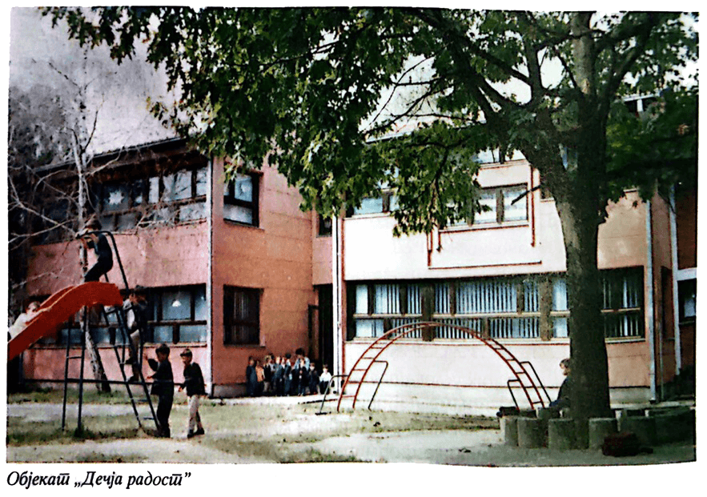

Историјат
Пут кроз историју наше установе – од оснивања до данас
Предшколска установа "Милка Диманић" - Власотинце
Иницијативу за оснивање забавишта, школске 1928/29. године, покренули су просветни радници и други виђенији грађани Власотинца. Министарство за просвету Краљевине Срба, Хрвата и Словенаца одобрило је његов рад и за прву забавиљу поставило Надежду Марковић.
У првој забавишној групи било је 39 деце предшколског узраста, од којих ће неки постати познате личности и истакнути стручњаци. За прву годину рада у забавишту, забавиља Надежда Марковић добила је од школског надзорника Јована П. Јовића оцену "повољан".
Следеће школске године она је отишла из Власотинца, а на њено место је распоређена Нада Божић, забавиља из Мола. Њен рад су сви школски надзорници оцењивали оценом "одличан", а према писању Станислава Горуновића у листу "Власина" број 54 од 24. априла 1998. године, школски надзорник Риста Н. Крстић је, приликом прегледа, констатовао следеће:
„Да је забавиља Нада Божић своју дужност вршила савесно, са вољом и потребном способношћу. Да је програмом предвиђено градиво правилно обрадила и утврдила. Потребну дисциплину љубављу је стварала и успела да код деце развије дружељубље, љубав према школи, наставницима и родитељима. Наставница забавиља Нада Божићевa, поред стручне, има и моралне квалификације које је карактеришу као примерну забавиљу.”
Рад ове забавишне групе није престајао ни за време Другог светског рата, јер је Нада Божић, и када школа није радила, са својом групом деце организовала рад у црквеним или приватним просторима.
Нада Божић се, после рата, вратила у родни Мол, а за васпитачицу у забавишту долази, 1945/46. године, Власотинчанка Славица Давинић, која ће на том послу остати до пензионисања, 1978. године. Број деце у забавишту стално је растао, па је Славица Давинић са 40 деце радила у две смене. Кад је група нарасла на 60 деце, 1950. године, подељена је на две, а Смиља Ликић је преузела другу васпитну групу. После њеног одласка, ту васпитну групу је преузела Симка Маринковић.
Побољшањем општих услова постају бољи и услови за рад забавишта — добијена је нова опрема и намештај примерен узрасту деце, што се није мењало до 1971. године. Тада се Основна школа „Синиша Јанић” дели на две школе, па се у просторијама бивше Гимназије формира и Основна школа „8. октобар”. Због великог интересовања родитеља у њој се формира васпитна група предшколске деце, а учитељице, које су поред Славице Давинић радиле са предшколском децом, касније су се преквалификовале за васпитаче.
Средином седамдесетих година забавишне групе нису више биле довољне да задовоље потребе породица и деце. Целодневни боравак био је нова потреба у Власотинцу. Због тога је Општинска самоуправна интересна заједница дечје заштите донела, 1975. године, одлуку о изградњи дечјег вртића и одмах почела извођење радова, који су завршени 1977. године.
Скупштина општине и Скупштина Самоуправне интересне заједнице дечје заштите донеле су одлуку о оснивању прве установе за децу, под називом: Дечји вртић „Милка Диманић”. Дечјем вртићу је дато то име у знак сећања на младу и храбру девојку Милку Диманић из Власотинца, истакнуту скојевку и борца Бабичког одреда.
Установа је започела рад 8. марта 1978. године. Одмах је формиран и целодневни и полудневни боравак деце. Упоредо је текао и процес формирања васпитних група полудневног боравка при школама у граду и у селима. До њиховог обједињавања у оквиру дечјег вртића, 1. јануара 1985. године, било их је укупно 10.
Први директор дечјег вртића био је Живорад Ђонић, а у прво време установа је запошљавала око десет радника - четири васпитача, две медицинске сестре, једног рачуноводственог радника и три остала радника.
Новоизграђени вртић убрзо је постао претесан да прими све заинтересоване, па се 1983. године постижу договори и доноси одлука о изградњи још једног дечјег вртића. Две године касније, 25. маја 1985. године, нови вртић под називом "Колибри" предат је на употребу.
У току његове изградње, 1984. године, дужност директора преузима Драгољуб Тошић, који ће на том послу остати до краја ХХ века.
Осамдесете године прошлог века карактерише интензиван развој мреже дечјих објеката и других простора за рад са децом, али и развој бројних облика рада и услуга деци и породицама. Ту позитивну енергију, створену у Власотинцу осамдесетих година ХХ века, неће зауставити ни кризне деведесете године. Решени да своју децу заштите и да им пруже најбоље што могу, Власотинчани су градили и адаптирали просторе за децу 1993, 1994. и 1999. године.
У раду са децом остварују се прописани основи програма васпитно-образовног рада, превентивне здравствене заштите, исхране и социјалног рада. За установу је карактеристично да посвећује веома велику пажњу изради играчака за своје васпитне групе, али и за тржиште. Путем спонзорства или набавком материјала по фабричким ценама обезбеђује материјале за израду меких играчака које, под повољним условима и у знатним количинама, продаје и тако побољшава свој материјални положај. На исти начин користи и могућности кухиње да производи оброке и пецива и за кориснике изван вртића, чиме остварује додатне приходе. Уопште, ова установа пружа различите услуге породицама и деци, што јој обезбеђује додатне приходе.
У остваривању социјалне функције идентификују се деца којој је потребна помоћ, а затим покрећу активности како би се та помоћ обезбедила. У току 1999. године, на пример, у установи је било 60 деце којима је обезбеђивана материјална помоћ - бесплатан боравак у вртићу, набавка одеће и обуће. За децу која живе у породицама са поремећеним односима међу родитељима, у сарадњи са Центром за социјални рад утврђују се мере помоћи за свако појединачно дете, односно породицу.
Сарадња са родитељима и друштвеном средином стално се обогаћује и унапређује, чиме се ствара повољна клима према деци за побољшање њиховог положаја.